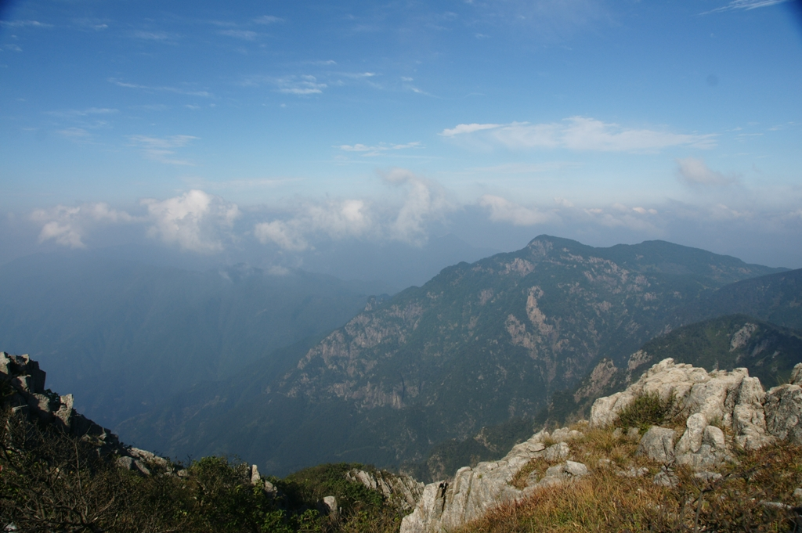

发信人: cccccm (cccccm), 信区: outdoor
标 题: 古道 清凉
发信站: 饮水思源 (2009年10月13日00:01:30 星期二)
在奇峰云海里徜徉，蓦地丢下了自我，抛开了自我~~~
山脊踩在脚下，绿树掩映下的徽杭风景，远山云影的层层叠叠，光影变幻里的神游，像极
了梦里的风景，只是背包而行，天地于我的阔大和渺小，也只能在这一步一步间体会，汗
水淋湿了，一座又一座山头~~~
清凉峰位于浙皖边界，徽杭古道的蜿蜒缠绕，多少古朴，多少静谧~石板路尽头的江南第一
关，也只在群峰间谦卑的低首俯瞰，山崖两岸的青葱翠绿，潺潺溪水，多少温柔与刚劲，
多少灵秀俊美~~~
行不远有老人高处吹笛，山谷间回绕的旋律，悠悠扬扬~立杖而听，留下一抹感动，继续前
行~
screen.width - 200){this.width = screen.width - 200}">
背包客的行走，孤独，带着点牵挂，队伍蛇行，又多少热闹，多少笑语欢颜~把脚印留在碧
水青山间，让笑声回荡，回荡在远离尘嚣的古道、清凉~~~
screen.width - 200){this.width = screen.width - 200}">
开始思考驴行的意义，任汗水肆流的快感变成心无一物的行走，当自己的呼吸变成了这个
世界最响亮的旋律，也便成了最优美的旋律，努力爬过一个山头后蓦然回首的一次回眸，
惟天、惟地、惟路、惟人~~~而人在山头眺望，而路在脚下，而白云蓝天的自在飘摇，心在
飘摇~~~或许，这就是行走的乐趣~~~
screen.width - 200){this.width = screen.width - 200}">
 screen.width - 200){this.width = screen.width - 200}">
screen.width - 200){this.width = screen.width - 200}">
初秋时节的山风很大，披着外套在帐篷外独立，帐篷里的头灯亮着，快速钻进去，温暖的
小窝，却有着家一般的温暖，在睡袋里酣睡，想着自己的事，想着她的事，渐入梦乡~暖暖
的~~~
screen.width - 200){this.width = screen.width - 200}">
走进户外，感受户外，享受户外，远离城市的车水马龙，饱览久违的绿色，拥抱久违的自
然，或许，这就是身心最好的归宿，最好的休闲~~~
清凉峰顶的云还在变幻着不同的形状，偶尔飘下的云气也在呼吸间飘散，一览众山，多的
不只是豪迈，更多的依恋和热爱在汹涌，这片河山~~~
screen.width - 200){this.width = screen.width - 200}">
商人往来的古道已经沉寂，默默的守护着这片山水；清凉峰的眺望还在，远方~~~路，还在
脚下~~~
--
..be yourself man, be proud of who you are..
. 他不是在哭。他只是在流泪。
※ 来源:·饮水思源 bbs.sjtu.edu.cn·[FROM: 211.80.60.158]
|